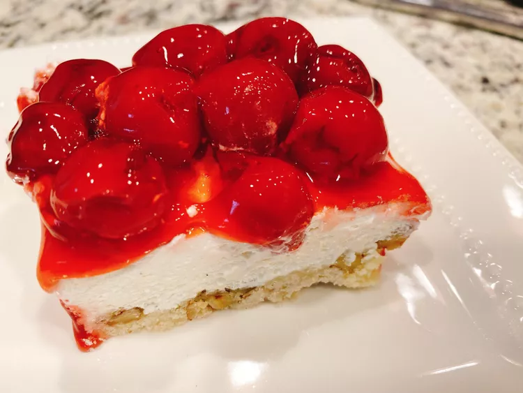

Cherry Crunch Dessert

Description
Cherry pie filling is topped with buttery cake mix crumbles in this quick and easy 3-ingredient crunch cake
that's great for birthdays.
Ingredients
- 2 tablespoons White sugar
- 1 1/2 cups all purpose flour
- 3/4 cup butter, softened
- 1 cup chopped pecan
- 2 cups confectioners' sugar
- Cream cheese
- 1 teaspoon vanilla bean paste
- 2 (21) ounce cans cherry pie filling
Steps
- Preheat the oven to 350 degrees F (175 degrees C).
- Whisk flour, sugar, and salt together in a medium bowl. Cut in butter with a pastry blender, a fork, or your
fingers until crumbly; stir in pecans. Press crust mixture evenly into an ungreased 9x13-inch baking pan.
- Bake crust in the preheated oven until golden, about 20 minutes. Let cool.
- Meanwhile, beat confectioner's sugar and cream cheese together in a large bowl until combined. Fold in
thawed whipped topping; stir in vanilla bean paste.
- Spread cream cheese filling over cooled crust; top with cherry pie filling. Refrigerate until ready to
serve.